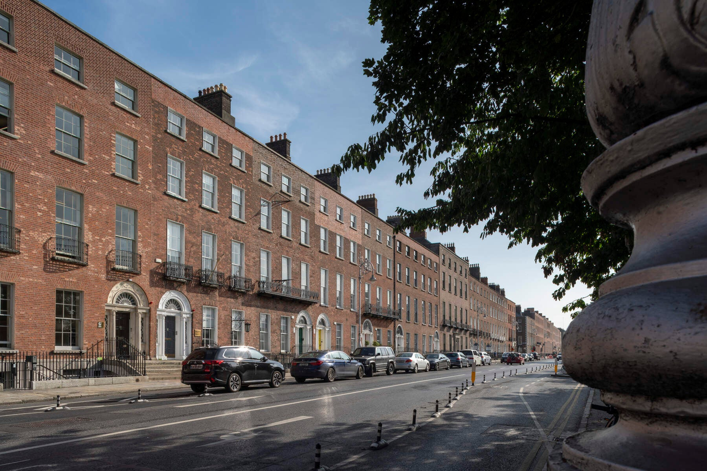
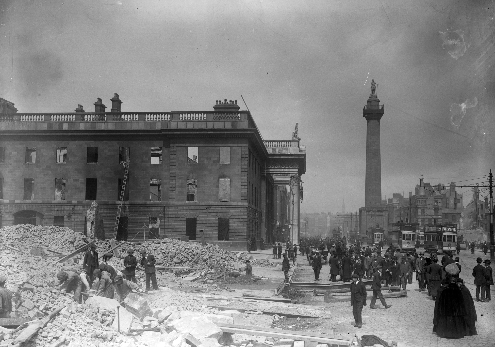
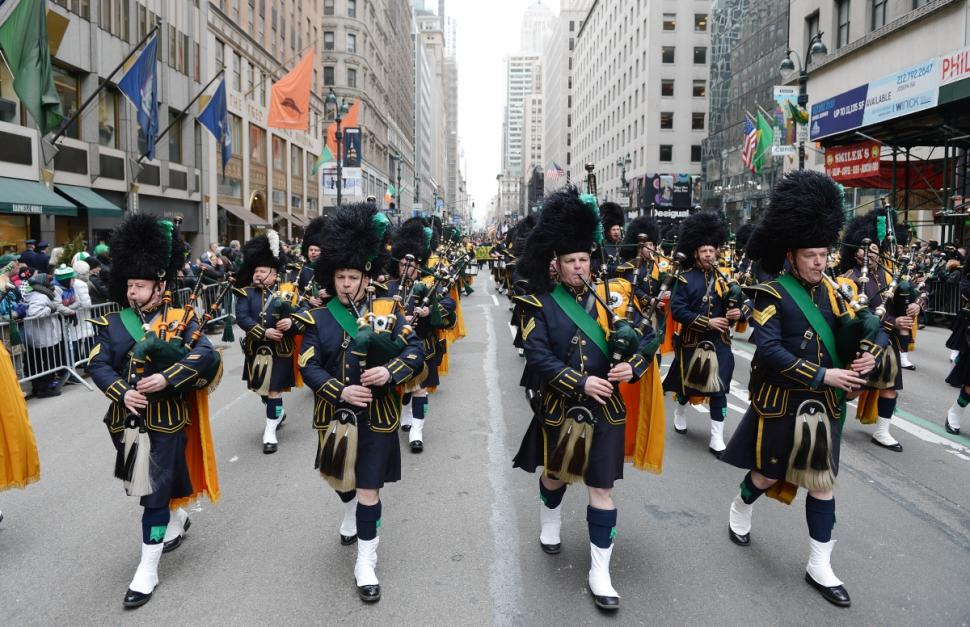

Early History
Dublin's history dates back to the Viking settlement in the 9th century. The city grew around the River Liffey and became a significant trading port.

Georgian Dublin
The 18th century saw a period of significant growth and architectural development, resulting in the elegant Georgian buildings that still grace the city today.
Explore Merrion Square and admire the architecture.
Irish Independence
Dublin played a central role in the fight for Irish independence in the early 20th century, with many historical landmarks associated with this period.
Visit the GPO (General Post Office) on O'Connell Street to learn more.
 GPO MuseumIrish Culture
Experience traditional Irish music, dance, and storytelling in various pubs and cultural centers throughout Dublin.
Consider attending a performance at the Abbey Theatre, Ireland's national theatre.
 Abbey Theatre